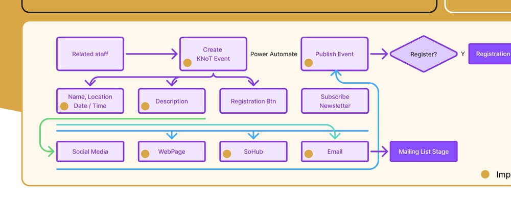

Case Study · New Feature Ideation
Turning a weekly manual task at an ANU research institute into a fully automated workflow
Summary
As a Computing Intern at ANU's McCusker Institute, I designed and built an automated workflow that replaced a manual, weekly newsletter process — freeing staff time and ensuring updates went out consistently. I also benchmarked our approach against two alternatives to make sure I was recommending the right long-term direction, not just the fastest one to ship.
Background & Challenge
The McCusker Institute (hosted by Michelle Cheah and Chris Browne) connects academic research at ANU with real-world social issues, equipping students to address complex problems through cross-disciplinary, project-based learning.
Its weekly newsletter — announcing upcoming KNoT sessions (the institute's term for its interactive workshops) — was being assembled and sent out by hand every week. That manual process caused staff distraction from teaching, inconsistent delivery, and low information transparency for the students and partners it was meant to reach. My task was to design and build a system that removed the manual step entirely.
The Solution
I designed and built an automated workflow using SharePoint and Power Automate, covering the entire path from raw event data to a delivered newsletter.

The workflow triggers automatically on a recurring schedule (every Friday at 9 AM), so newsletters go out consistently without manual intervention.
Pulls the preprocessed event dataset from SharePoint and parses it into structured data — title, start time, session slug, location — for filtering.
Filters events to the following week, then dynamically generates an HTML block per event, merged into one styled newsletter body.
Embeds the finished HTML into an email template and sends it via Outlook to the relevant student or staff mailing list.
Platform Decision
Once the workflow was live, I benchmarked our approach against two alternatives, to make sure I was recommending the right long-term direction rather than just the fastest one to ship.
| Criteria | Commercial Platform | ANU Supported (built) | Fully Custom |
|---|---|---|---|
| Automation | Restricted — limited event or email workflows | High — Power Automate supports data-driven triggers | High — full control over logic and personalisation |
| Data ownership | Low — data sits on third-party servers | Medium — stored within ANU's Microsoft environment | High — fully owned and managed internally |
| Scalability | Low — features often gated behind premium plans | Medium — moderate scalability, may slow with complex workflows | High — can expand to new features and user groups |
| Turnaround | Fastest (1–2 days), but costs rise sharply with use | Moderate (5–7 days), covered by existing ANU licences | Longest (6–8 months), 2–3 years to pay back |
I built the MVP on the ANU-supported tier (SharePoint + Power Automate) for a fast, low-cost rollout within the internship's timeframe — while documenting the fully custom approach as the recommended path if the institute's usage grows past roughly 200 users.
Oversees and manages the platform to track student progress and participation.
Develop and maintain the system while evaluating its ongoing suitability and usability.
Register for sessions, track progress, and receive newsletters and updates.
Review the project's academic quality and ensure it meets course requirements.
Outcome & Reflection
The automated workflow is live and running weekly, removing a recurring manual task from staff's plate. Just as importantly, benchmarking it against commercial and fully-custom alternatives meant the institute now has a clear, evidence-based view of when it would be worth investing further — not just a tool I happened to build.
Benchmarked three implementation paths to ground the recommendation in evidence, not preference
Designed an end-to-end automated pipeline from raw data to a delivered, styled newsletter
Worked with my supervisor using Git, aligning on requirements and dividing development work